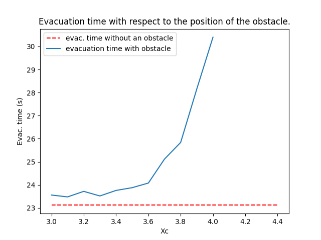

Simulations of Hughes' model
Introduction and notations
In the two-dimensional setting, the Hughes' model takes the following form: \[\left\{ \begin{matrix} \partial_t \rho(t,x) + \textrm{div} \left( \vec{V}(x) f(\rho(t,x)) \right) = 0 \\ \left|\nabla u(x) \right| = c(\rho(t,x)) \\ \vec{V}(x) = - \frac{\nabla u(x)}{|\nabla u (x)|}. \end{matrix}\right.\] Here \( u \) is a solution of the Eikonal equation with a Dirichlet condition \(u=0\) at the exits.
Demonstrations
University restaurant of Tours
Below is a simulation of the 2D Hughes model in a domain defined by the geometry of the university restaurant of Tours and with a random initial datum defined by \[ \forall \mathcal{T} \in M_\Delta, \;\; \rho_0(\mathcal{T}) = 0.23 -0.4(X-0.5), \; \; X \sim \mathcal U ([0,1]).\]
Two exits symetrical room
Below is a simulation of the 2D Hughes model in the setting defined by: \[ \bar\Omega := [-2,0]\times [3,4] \cup [0,10]\times [0,7] \cup [10,12] \times [3,4], \] \[ \mathcal{E} := \{-2\} \times [3,4] \cup \{12\} \times [3,4],\] \[ \mathcal{W} := \partial \Omega \setminus \mathcal{E},\] \[\rho_0(x) := 0.7\times \mathbb{1}_{B((7,2.5),2.4)},\] \[ c(\rho) = 1 +5\rho. \]
Obstacle's impact
In order to explore the impact of an obstacle in front of an exit, we introduce the following domain: \[ \bar\Omega_0 := [0,5] \times[0,5] \cup [5,7] \times [2,3], \] \[ \mathcal{E} := \{7\} \times [2,3], \] \[ \rho_0 = \mathbb{1}_{[0,2]\times[1.5,3.5]},\] \[ c(\rho) := 1 = \rho. \] Furthermore, for any \( X_c \in [3,4] \) we define: \[ \Omega_{X_c} := \Omega_0 \setminus B((X_c,2.5),0.7). \] We obtain a class of domains with an round obstacle with a variable position. We present below a simulation with \( X_c = 3.5 \).
Here is a graph of the total evacuation time in relation with the position of the obstacle:

It appears that the Hughes approximation is not able to reproduce the so-called Braess paradox.
Mushroom profile
In Hughes' simulations, we observe that, when the total mass drops below a certain threshold (around \( \mathbf{TM} = 14 \) ), the Hughes approximation essentially does not depend on the initial datum anymore. We call this threshold the mushroom threshold and, if \( \mathbf{TM}_\Delta(\rho^j_\Delta) \) is less than the mushroom threshold, we say that the Hughes approximation is in its mushroom state in reference to the distinctive shape. We present here three simulations exhibiting this mushroom property in the domain defined by: \[ \Omega := [0,10] \times [0,7] \cup [10,12] \times [3,4], \] \[ \mathcal E := \{12\} \times [3,4]. \]
Bar initial datum
Random initial datum
Regularization
Here, we try to exhibit a regularization of \( \rho_\Delta \) in time. We are specifically interested in the regularization in the direction that is orthogonal to \( V(x) \). We focus on the specific framework: \[ \Omega := [0,10] \times [0,5],\] \[ \mathcal{E} := \{10\} \times [0,5], \] with \[ c(\rho) = 1 + \rho. \] We consider the initial datum defined by: \[ \rho_0 (x,y) := \left\{ \begin{matrix} 0.95 &\textrm{ if } \left\{\begin{matrix} x \in [0,9] \\ \exists k \in \mathbb{N} \textrm{ s.t. } x \in [0.2+0.8k, 0.8 +0.8k] \\ \exists j \in \mathbb{N} \textrm{ s.t. } y \in [0.2 +0.6j, 0.6+0.6j] \end{matrix}\right.\\ 0 &\textrm{ else.} \end{matrix} \right. \] We present the corresponding simulation below: